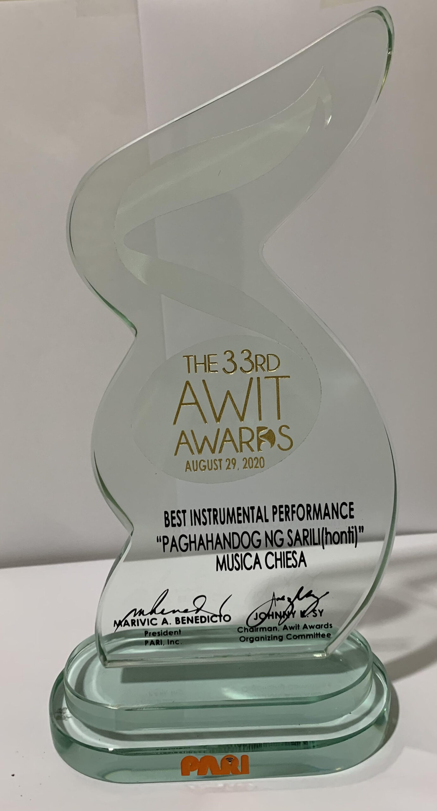

Philippine Music Awards: Celebrating Excellence in Music
These are some of the existing Music Awards in the Philippines.
Awit Awards, Wish Music Awards, Myx Music Awards and more.
Awit Awards

The Awit Awards is a prestigous award-giving body that celebrates Filipino musicians and other individuals who contribute to the production of Filipino music.
The term "Awit" originates from the Filipino language and signifies "song" in English. Each year, the Philippine Association of the Record Industry (PARI) organizes
the Awit Awards to recognize exceptional achievements in the music industry and honor those who have made significant contributions in the music industry.
The first Awit Awards ceremony took place in Makati in 1969.
However, the Awit Awards were discontinued in 1972 after three ceremonies.
It was later revived by the Philippine Association of the Record Industry (PARI),
and the awards were restarted in 1988. Since then, the Awit Awards have been held annually and continue to this day.
OPM legends such as Gary Valenciano, Ryan Cayabyab, Jose Mari Chan, Ogie Alcasid, Parokya ni Edgar, and many others have been recognized as past winners of the prestigious Awit Awards. The latest edition of the Awit Awards was held on November 9, 2023.
While the Awit Awards is generally regarded as a reputable awards show, it has faced criticism from online users regarding alleged inconsistencies in vote results and a perceived lack of transparency and accountability.
You, what are your thoughts about this? Let us know!
Myx Music Awards

The cable channel Myx presents the Myx Music Awards, often known as the Myx Awards, to honor the biggest hitmakers in the Philippines. The annual awards ceremony takes place in March and is broadcast on Myx but on delayed time. The first edition of this award was on June 6, 2006 which was almost 18 years ago.
Myx Awards have 17 major categories (some of these categories have already vanished and been added) which include the Myx Magna Awards. Some of the OPM legends are given this award.Furthermore, the most awarded OPM artist in this award is the pop star royalty Sarah G. (Sarah Geronimo).
However, their last awarding ceremony was in 2021. There is also limited info on why they stop this award, so we cannot really determine the reason for this.
Wish Music Awards

If you are familiar with Wish 107.5, this music award is presented by them. Wish 107.5 is a fastest rising FM radio station. One of their notable contributions is the introduction of the Wish Bus, which provides a unique musical experience by showcasing live performances of OPM bands, singers, and idols. This innovative concept has revolutionized the traditional practices of FM radio stations. Wish 107.5 is recognized for its pioneering efforts and continues to make waves in the industry.
With the evolution of music and to give recognition to Filipino Artists, wish created this awarding ceremony wherein different OPM artists gather together to showcase their outstanding talent. Also the winners of each category are given the chance to help other people by giving cash donations to their respective beneficiaries.